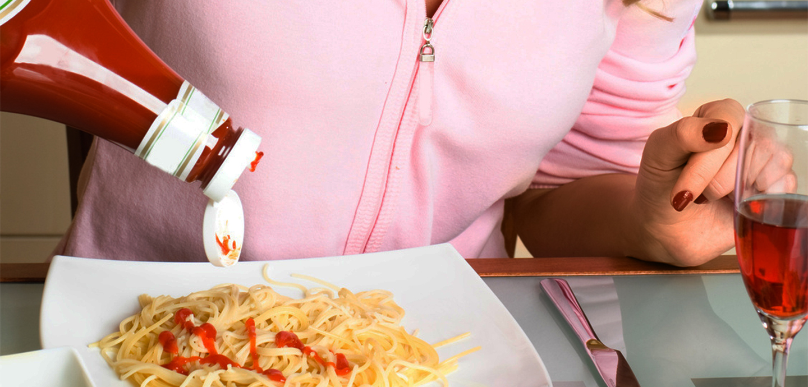

Machine de remplissage de sauce & machine d'emballage pour sauces et condiments
KIWL Machine fabrique des remplisseuses, boucheuses, étiqueteuses et lignes complètes pour sauces, ketchup, mayonnaise, huile alimentaire, cosmétique et produits d'entretien — usine à Zhangjiagang (Chine), export vers l'Afrique francophone.

Notre site francophone s'adresse aux industriels et entrepreneurs qui construisent une usine de condiments ou d'huile : vous avez besoin d'une configuration réaliste, d'un prix usine et d'un support après installation — pas d'une brochure générique.


Pourquoi les usines africaines choisissent KIWL
- Fabricant usine (pas trading) — prix et délais clairs
- Lignes adaptées aux sauces locales (viscosité, particules, PET/verre)
- Semi-automatique ou automatique selon capacité
- Support technique WhatsApp après installation
Gammes d'équipements
- Remplissage & bouchage
- Remplisseuse semi-automatique
- Boucheuse · Étiqueteuse
- Mayonnaise & ketchup · Sauce piquante
- Cosmétique · Produits d'entretien
- Confiture · Miel · Monobloc
- FAQ : comment choisir une remplisseuse
- À propos · Usine Zhangjiagang
Parler à un technico-commercial Visiter l'usine (Chine) À propos
Par où commencer ?
Si vous lancez une sauce : ouvrez le hub sauces, puis la fiche produit (piquante, mayo/ketchup). Si vous embouteillez de l'huile de palme : page huile alimentaire. Si vous hésitez sur la techno : FAQ. Ensuite, envoyez le brief sur WhatsApp pour un chiffrage.
KIWL reste votre interlocuteur unique de la machine à la ligne complète — conception, FAT, expédition et support.
Contenu du site francophone
Les pages produits détaillent technologies, cadences, cas d'usage Afrique et liens vers le devis WhatsApp. Le hub sauces couvre condiments ; l'huile de palme a sa page ; le FAQ répond aux arbitrages piston / semi-auto / monobloc. Naviguez par besoin, puis contactez-nous avec un brief court.
Engagement KIWL
Chaque projet Afrique est traité comme une ligne industrielle réelle : brief produit, choix techno, FAT, expédition, support. Nous préférons une configuration juste à une machine surdimensionnée qui immobilise votre capital. Parcourez les fiches, puis écrivez sur WhatsApp avec produit, format et cadence.
Le site anglais reste disponible pour vos partenaires internationaux ; le français cible vos équipes locales et vos décideurs francophones.